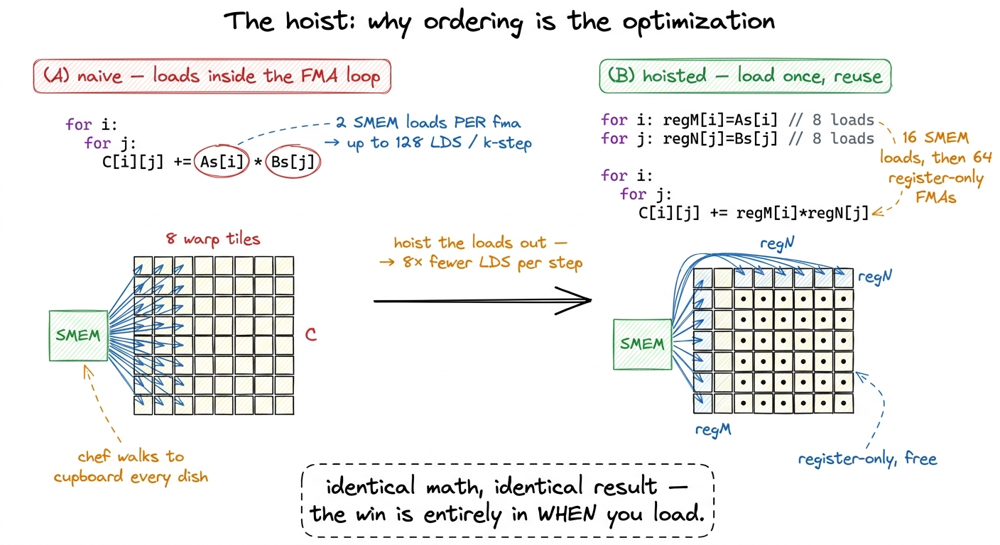
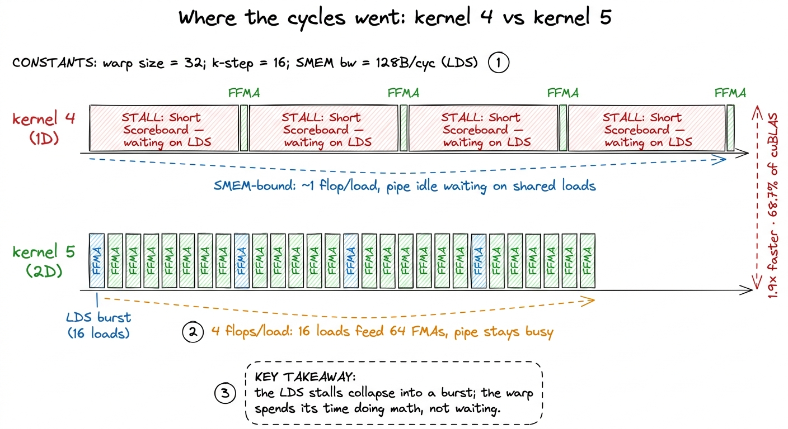
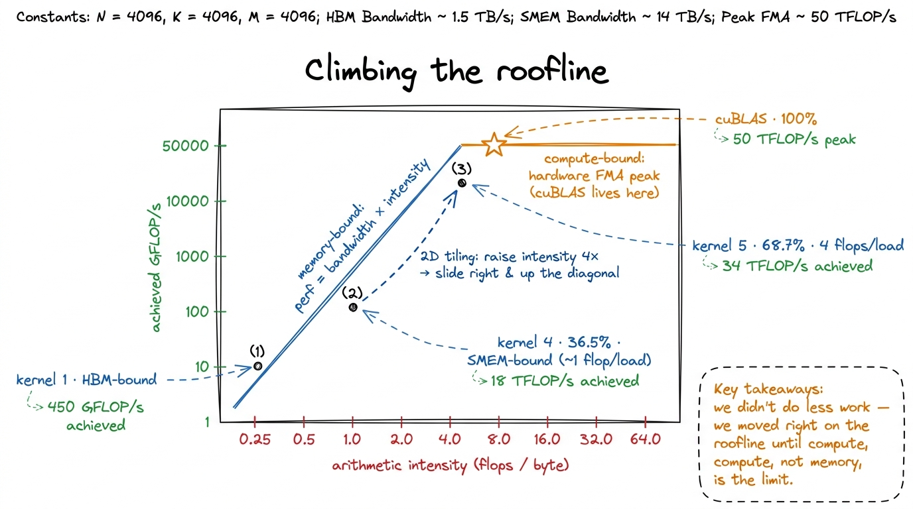

Kernel 5: 2D block-tiling 68.7%
Before we touch a line of CUDA, let me put the whole GEMM ladder into one sentence, because kernel 5 only makes sense against it. A matrix multiply does a fixed, unchangeable number of multiply-adds — that number is set by the shapes, not by us. What we can change is how many times we go and fetch a value from memory in order to do each of those multiply-adds. Every kernel on this ladder has been the same move dressed up differently: keep the arithmetic the same, shrink the memory traffic per result. Kernel 5 is the biggest single jump on the whole ladder, and it is that one move applied in two dimensions instead of one.
So here is the question this article answers, stated plainly: we already give each thread a column of 8 outputs and it helped a lot — why does giving each thread an 8×8 square help so much more? If you have never written a GPU kernel, don't worry. I'll build the one idea you need — arithmetic intensity — from scratch, do the arithmetic by hand on a tiny example, and only then show the code. By the end you'll be able to look at any tiling scheme and predict, on a napkin, whether it will be fast.
First, the one number that decides everything
Let me start with the mental model I want you to carry through the whole piece. Forget matrices for a second. Imagine a chef at a counter. Every dish he cooks (a multiply-add) needs an ingredient he keeps in a pantry down the hall (memory). Walking to the pantry is slow. Cooking is fast. If the chef walks to the pantry, grabs one onion, walks back, and chops it into one dish — he spends almost all his time walking. But if he grabs one onion and uses it across eight dishes, the walk is amortized: eight dishes per trip instead of one.
That ratio — useful work done per trip to memory — is called arithmetic intensity. It is flops divided by bytes moved (or, on-chip, flops divided by loads). It is the single most important number in kernel engineering, and almost every optimization you will ever read about is a scheme to raise it.
 figure rendering · The chef analogy. Every kernel on this ladder is a scheme to cook more
figure rendering · The chef analogy. Every kernel on this ladder is a scheme to cook moreNow map the chef back onto the hardware. The "pantry down the hall" is really a hierarchy. Global memory (HBM, the GPU's main DRAM) is the far pantry — huge but slow, hundreds of cycles away. Shared memory (SMEM), an on-chip scratchpad each thread block owns, is a closer cupboard — much faster, but still an explicit load instruction (LDS in the assembly). And registers are the ingredients already in the chef's hands — essentially free to use in an arithmetic instruction.1 On an H100 an HBM access is on the order of hundreds of cycles; a shared-memory LDS is roughly 20–30 cycles of latency but, more importantly here, limited throughput — the shared-memory pipe can only issue so many LDS per cycle. When every warp is queued up waiting on LDS, you are shared-memory-throughput-bound, which is exactly kernel 4's problem. The whole ladder is a march down this hierarchy: kernel 1 lived in the far pantry, later kernels pulled the working set into the cupboard, and kernel 5 is about getting the ingredients into the chef's hands and keeping them there while he cooks a whole tray of dishes.
Where kernel 4 left us, and why it stalled
Let me recap kernel 4 in one tight paragraph, because kernel 5 is a direct answer to its bottleneck. In kernel 4 we gave every thread a column of TM = 8 outputs. On each step of the shared-memory k loop, the thread loaded TM = 8 values of A and 1 value of B from shared memory, then did 8 fused multiply-adds — reusing that single B value against all eight A values. That one idea took us from 12.8% of cuBLAS to 36.5%. Real progress.
But now let's do the chef arithmetic on it, because it tells us exactly what to fix. To do those 8 flops, the thread made TM + 1 = 9 shared-memory loads. That is 8 / 9 ≈ 0.9 flops per load — a hair under one flop per trip to the cupboard. The chef is walking to the cupboard almost as often as he's cooking.
And the profiler confirms it. Point Nsight Compute at kernel 4 and the warp schedulers are stalled on Short Scoreboard, waiting for LDS results.2 LDS is the SASS mnemonic for a shared-memory load. Short Scoreboard is the specific stall reason the scheduler reports when a warp is blocked waiting on a fixed-latency on-chip operation like an LDS — as opposed to Long Scoreboard, which is the global-memory (HBM) wait. Seeing Short Scoreboard dominate is the fingerprint of a shared-memory-bound kernel. Not on math. The arithmetic units are sitting idle waiting for the cupboard. We are shared-memory-throughput bound. We already climbed down from HBM to SMEM; now SMEM is the wall.
So the question sharpens: how do we make the chef cook more dishes per trip to the cupboard, without changing the recipe?
The fix: own a rectangle, not a strip
Here is the move, and it is almost embarrassingly simple once you see it. In kernel 4 a thread owned a column of outputs. In kernel 5, a thread owns a small rectangle: a TM × TN = 8×8 block of the output C, held entirely in registers.
Why does the shape matter so much? Let's do it by hand, slowly, because this is the heart of the whole article.
Take one step of the k loop. The thread needs to update its 8×8 tile using the current k-slice. It loads TM = 8 values of A into a little register array regM, and TN = 8 values of B into another register array regN. Now — and this is the trick — it computes the full outer product: every one of the 8 A values multiplied against every one of the 8 B values. That's TM × TN = 8 × 8 = 64 fused multiply-adds.
Count the trips. To do those 64 multiply-adds, we made TM + TN = 8 + 8 = 16 shared-memory loads. That is 64 / 16 = 4 flops per load. Compare that to kernel 4's ~1. Same recipe — a GEMM is a GEMM, the flop count is fixed — but the chef now cooks four dishes per cupboard trip instead of one.
 figure rendering · The per-thread register tile. Sixteen loads feed sixty-four multiply-a
figure rendering · The per-thread register tile. Sixteen loads feed sixty-four multiply-aLet me make sure the outer product itself is crystal clear, because it's where the reuse comes from. When you multiply an 8-vector by an 8-vector as an outer product, you get an 8×8 matrix, and each input value touches an entire row or column of that output. regM[0] feeds all 8 cells in the top row. regN[0] feeds all 8 cells in the first column. So the value we loaded once gets used 8 times before we throw it away. That's the reuse. The vector shape — 8 wide and 8 tall — is what buys us 8× reuse on each loaded value; a column shape (kernel 4) only reused B and left A re-loaded every time.
The general rule, worth memorizing: a thread computing a TM × TN tile does TM × TN FMAs from only TM + TN loads. The intensity is (TM·TN)/(TM+TN), and — here's why square tiles win — that ratio is maximized when TM = TN. For a fixed budget of registers, a square gives you the most flops per load. An 8×8 tile gives 4.0; an 8×1 column (kernel 4) gives 8/9 ≈ 0.9; a 16×4 tile gives 64/20 = 3.2. Square is best.
Zooming out: how the block carves up its work
Nothing about the outer structure changed from kernel 4, so I'll keep this level brief — but I want to draw it, because the "zoom" from grid to block to thread is the picture that makes the whole thing click.
We tile the output C into blocks of BM × BN, and each thread block owns one such block.3 We use BM = BN = 128, BK = 8, TM = TN = 8. A 128×128 output block, cut into 8×8 register tiles, needs (128·128)/(8·8) = 256 threads — so we launch 256-thread blocks, comfortably under the 1024-thread max, which keeps register pressure survivable. Simon Boehm's reference walkthrough uses the smaller BM=BN=64 with the same TM=TN=8; the idea is identical, only the block size differs, and both land in the high-60s % of cuBLAS. A block streams the two input strips it needs — a BM × BK slab of A and a BK × BN slab of B — through shared memory in chunks of BK = 8 along the k axis, exactly as kernel 4 did. The only thing new lives inside the block, in how the 256 threads split up that 128×128 output.
Each thread owns an 8×8 sub-rectangle. Let's check the arithmetic closes, because if it doesn't, some output goes uncomputed or some thread sits idle. The block computes BM × BN = 128 × 128 = 16,384 output elements. With 256 threads, that's 16,384 / 256 = 64 results per thread — which is exactly our 8×8 register tile. Written the other way: (128 × 128) / (256 × 8 × 8) = 1. Every output element accounted for, no thread idle. Good.
 figure rendering · The zoom sequence: grid → block → thread. Each level reuses the tile b
figure rendering · The zoom sequence: grid → block → thread. Each level reuses the tile bI find it helps to say out loud what each level of that picture is for. The block level exists to get data out of the far pantry (HBM) and into the cupboard (SMEM) once, so 256 threads can share it. The thread level exists to get data out of the cupboard (SMEM) and into the chef's hands (registers) once, so 64 FMAs can share it. Same trick, two levels. Kernel 5's contribution is entirely at that second level.
The code — and why the ordering is the whole point
Now the code. I want you to read the inner loop carefully, because the thing that makes it fast is not what it computes but the order in which it does the loads and the math.
// registers for this thread's TM x TN output tile
float threadResults[TM * TN] = {0.0f};
float regM[TM] = {0.0f};
float regN[TN] = {0.0f};
// outer loop over the block's k-slab, already staged in As/Bs
for (uint dotIdx = 0; dotIdx < BK; ++dotIdx) {
// 1. load this thread's TM values of A and TN values of B into registers
for (uint i = 0; i < TM; ++i)
regM[i] = As[(threadRow * TM + i) * BK + dotIdx];
for (uint j = 0; j < TN; ++j)
regN[j] = Bs[dotIdx * BN + threadCol * TN + j];
// 2. the outer product: TM*TN FMAs from TM+TN loaded values
for (uint i = 0; i < TM; ++i)
for (uint j = 0; j < TN; ++j)
threadResults[i * TN + j] += regM[i] * regN[j];
}Look at the shape of it. Step 1 does TM + TN = 16 shared-memory loads into the register caches. Step 2 does TM × TN = 64 FMAs that touch only registers — regM, regN, and threadResults. No LDS inside the hot doubly-nested loop. That separation is the entire optimization.
Here's the question that makes it concrete: what would the naive version look like, and why is it slower? The naive version skips the register caches and indexes shared memory directly inside the i,j loop — threadResults[i*TN+j] += As[...i...] * Bs[...j...]. Same answer, same flops. But now each of the 64 FMAs pulls its two operands straight from shared memory: that's up to 64 × 2 LDS per k-step instead of 16. By hoisting the loads into regM/regN first, we load each value once and reuse it across a whole row or column of the tile. Hoisting is what collapses TM × TN loads down to TM + TN.

figure rendering · Before/after: the naive loop loads inside the FMA; hoisting the loadsTwo more details in the code earn their keep. First, regM, regN, and threadResults are fixed-size arrays with compile-time bounds, so nvcc unrolls both inner loops fully and keeps every entry in a register — no local-memory spill, no runtime index arithmetic.4 This only holds while the arrays stay small. At TM = TN = 8 the tile needs 64 accumulators + 8 regM + 8 regN = 80 registers, plus loop counters and address registers — survivable. Push TM/TN to 16 and the accumulators alone want 256 registers, past the hard 255-registers-per-thread ceiling; the compiler then spills to "local memory," which is really L1/HBM, and performance falls off a cliff. Bigger tiles are not automatically better — there's a register wall. Second, notice As is stored row-major here (As[(threadRow*TM+i)*BK + dotIdx]), so a thread's TM reads stride by BK rather than being contiguous. Transposing As so those reads become contiguous — and can be issued as one wide vectorized load — is a real win, but it's a separate one we defer to the next kernel.
The measurement
We build it, check correctness against the FP32 reference, and benchmark. Kernel 4 landed at 8,474 GFLOP/s, 36.5% of cuBLAS. Kernel 5 comes in at roughly 15,972 GFLOP/s — about 68.7% of cuBLAS, a 1.9× speedup from a single structural change.5 That 15,972 GFLOP/s figure is the measured number on the reference H100 run; the exact value shifts a little with problem size and clocks, but the ratio — high-60s percent of cuBLAS, roughly doubling kernel 4 — is stable and is the number to remember. For the first time on this ladder we have crossed the halfway line to a library NVIDIA has been hand-tuning for fifteen years.
The profiler tells the same story from the memory side. The Short Scoreboard stalls that dominated kernel 4 have drained away. Let me put the per-result accounting next to it, because it's the cleanest way to see why.
For 1D tiling (kernel 4), each output element cost about K shared-memory loads and K/32 global-memory loads over the full k dimension. For 2D tiling (kernel 5), each output element costs about K/4 shared-memory loads and K/64 global-memory loads.6 These per-result counts are averages over the whole k dimension, not exact per-instruction tallies — the point is the ratio. The shared-memory number drops by ~8× and the global-memory number by ~2×; both memory levels get relieved by the same move, which is why kernel 5 is such an outsized jump rather than an incremental one. So the shared-memory traffic per result drops by about 8×, and the global-memory traffic by about 2×. The 4-flops-per-load intensity we computed by hand and this per-result reduction are two views of the same thing: reusing each loaded value against a whole row or column of the register tile.

figure rendering · The same work, two timelines. Kernel 4 waits on the cupboard; kernel 5And here is the deeper reading, which connects straight back to the three regimes. Every kernel on this ladder has been a march down the memory hierarchy toward the compute-bound regime. Kernel 1 was HBM-bound. Coalescing and shared memory pulled the working set onto the chip. 1D tiling pushed reuse into registers but left us shared-memory-bound. 2D tiling deepens that same register reuse until — for the first time — neither memory level is the obvious wall, and the SASS inner loop is mostly FFMA.

figure rendering · The roofline view. Raising arithmetic intensity slides each kernel upWe are becoming compute-bound the honest way — not by doing less work, but by arranging the work so the arithmetic units rarely wait.
What this tells us to do next
68.7% is a genuine milestone, but the remaining 31% is real money, and the profiler is already pointing at where it went.
The first clue: our shared-memory loads still move one 4-byte float at a time. The memory system would rather move 16 bytes in a single transaction. So the next win is vectorized loads — reading four floats at once with float4 / LDS.128, cutting the number of load instructions by 4× even though the byte count is unchanged. Fewer instructions means fewer chances to stall the issue pipe.7 A float4 load is one LDS.128 instruction instead of four separate LDS.32s. It also requires 16-byte alignment on the shared-memory layout, which is why kernel 6 introduces vectorized loads and the As transpose together — the alignment constraint ripples back into how we store As, tying the two changes into one commit. That's kernel 6, and it takes us to 78.4%.
After that the parameters BM, BN, BK, TM, TN stop being obvious. They trade occupancy against register-tile size against shared-memory footprint, and — as the register-wall sidenote above already hinted — the sweet spot is not something you can reason to on a napkin. You have to search it. So kernel 7 is an autotuning pass over that parameter space (84.8%), and kernel 8 restructures the block into warptiles to squeeze out the last of it (93.7%).
But hold on to the one idea, because every one of those later kernels is a refinement of it, not a replacement: give each thread a rectangle of the output, and feed its FMAs from registers. The rectangle was the jump — a 4× rise in arithmetic intensity that nearly doubled throughput. Everything after is polish on a move you now understand from the chef, to the outer product, to the roofline.